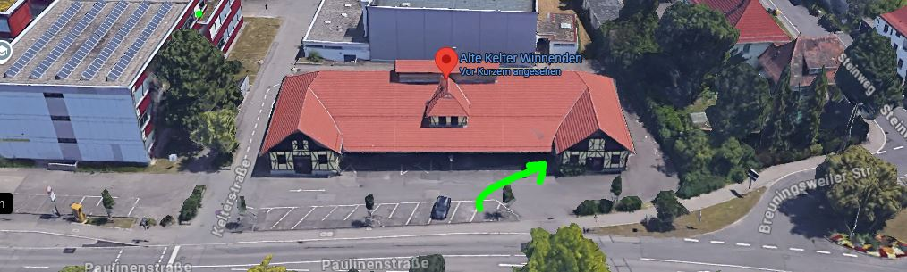

Deutschtraining
Deutschtraining offen für alle, die gerne Deutsch lernen wollen!
Der Förderverein Alte Kelter e.V. bietet an:
jeden Mittwoch und Donnerstag von 9.30 bis 11.30 Uhr in der Alten Kelter, Winnenden, Paulinenstr.33
Das Angebot ist kostenlos und richtet sich an motivierte Menschen, die eigenverantwortlich lernen wollen. Man kann unangemeldet kommen.
Gewünscht ist eine regelmäßige Teilnahme!
In den Schulferien findet kein Deutschtraining statt.
Eventuelle Anfragen bitte an Christa Weeger: Tel. 07195/ 62427
oder E-Mail: cweeger@posteo.de
Karte für Paulinenstr. 33 in OpenStreetMap öffnen
